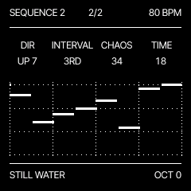
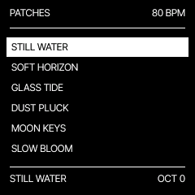
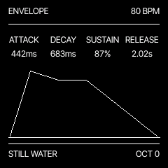
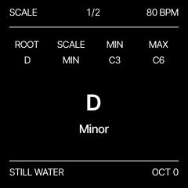

Shape a sound.
Two oscillators, a resonant filter and ADSR. Add movement with an assignable LFO. Explore classic synths, soft pads, plucks and a warm sub bass. Keep your favourites close.
Classic sounds.
Patterns that stay with you.
An ambient instrument for live sessions. Warm synths, spacious pads and delicate plucks, with a generative Euclidean sequencer. One track. Room to explore.

Two oscillators, a resonant filter and ADSR. Add movement with an assignable LFO. Explore classic synths, soft pads, plucks and a warm sub bass. Keep your favourites close.
Choose a root, scale and range. Set the loop in bars and spread its notes evenly. Direction, interval, chaos and timing reshape the sequence. It repeats until you change a setting.
Classic, Ping Pong and Reverse delay. Room, Spring, Hall, Space, Shimmer and Submarine reverb. Three FX pages keep sends, space and character within reach.



Free and open source under GPL-3.0-only. Version 0.8 is an experimental release. Software checks are included; hardware installation and recovery tests for this exact release are still pending. Read the test status and compatibility notes before installing.
The webplayer runs DRIFT's synthesis and screen code in your browser. Start audio, pick a patch and play. No FM-1 needed. Browser patches stay in that browser.
Use desktop Chrome or Edge and a USB data cable. Back up your work, open the installer and allow MIDI access. Keep the FM-1 connected until installation completes.
HOME selects patches; PLAY starts the pattern. ARP and SEQ shape it. SELECT sets tempo and ALGORITHM controls the low-pass filter. Start at 80 BPM and take your time.